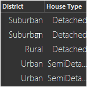
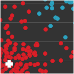

Machine Learning
 The purpose of machine learning is to find (and exploit) patterns in data. Traditionally developers, when faced with a problem, develop and algorithm and write code. Certain classes of problems, however, do not lend themselves to this approach. With machine learning, the developer instead supplies relevant data to the machine and allows the computer to create the appropriate algorithm.
Supervised Learning
 Supervised learning is the branch of machine learning that deals primarily with prediction. Given examples,
supervised learning algorithms create models that generalize the decision making process. In essence, the
machine learns from the past in order to accurately predict the future.
Supervised learning is the branch of machine learning that deals primarily with prediction. Given examples,
supervised learning algorithms create models that generalize the decision making process. In essence, the
machine learns from the past in order to accurately predict the future.
Unsupervised Learning
 Unsupervised learning is the branch of machine learning that strives to understand the structure of data. This data, unlike supervised learning, does not have a predefined outcome that requires prediction but is vast enough to require a principled approach to either visual or physical compression.
A simple way to start
Refer to our getting started page for a more detailed look on how to get going on various platforms. You can then read about the project, try out the documentation or get in touch.